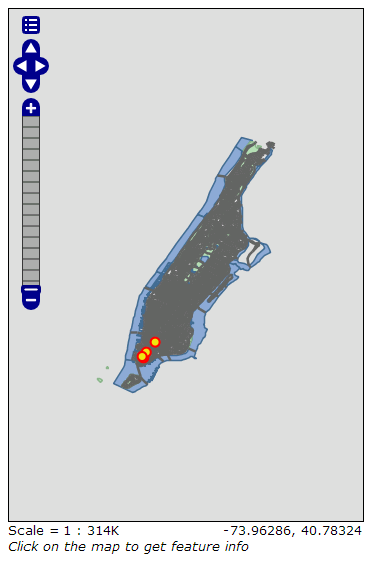

GeoServer 快速入门文档¶
GeoServer 是一款 Java 程序，用于为各类地理数据客户端提供数据服务。
本文档包含的内容有：
- 为一个 GeoServer 实例添加矢量和栅格数据源
- 使用样式编辑功能改变要素的颜色
- 测试一个简单的网页地图服务实例
- 了解可用的客户端程序

基本视图¶
开启 GeoServer 界面后，使用用户名“admin”和密码“geoserver”登录。管理界面将会显示。

Data 数据 面板中的 Layer Preview 连接可以用于预览服务中载入的数据。

在页面底部 tiger-ny 一览点击 OpenLayers ，可以用 OpenLayers 开启示例数据的显示。
{kind=link}
该界面的缩放可以用三种方式控制：
- 点击左侧的缩放尺，高位对应较大的比例尺。
- 使用鼠标滚轮，向前放大，向后缩小。
- 按住
shift 键- 并拖拽一个范围框。界面将尽可能地以相适应的缩放显示。
- 同理可以查看其它数据。
导入数据¶
Note
以下操作无法在 只读 环境下执行。你应当将 GeoServer 安装到硬盘或使用可写入的 USB 安装。
这里的示例数据是 Natural Earth data set 。它已经包含在 OSGeo-Live 中了。 (/usr/local/share/data/natural_earth/)
为了存储服务所需的数据，需要创建一个“Store”。在 GeoServer 的管理员页面选择 Stores 并点击 Add new Store 建立。

选择 Directory of spatial files 类别，创建页面显示如下：

输入所需的名称，例如 Natural Earth ；以及目标目录，例如 /usr/local/share/data/natural_earth/ 。 Browse 按钮可用于选择目标目录。完成后点击 save 。

点击各个图层右侧的 publish 执行发布。界面将转到 Layers：

示例数据集中的很多信息 GeoServer 可以自动识别并填入表格。在 Coordinate Reference System （坐标系统）中，Native SRS 原始坐标系 显示为“UNKNOWN 未知”。此处应当在 declared SRS 名义坐标系 填入正确的值，使得 GeoServer 能够对数据进行定位。在本例中，填入“epsg:4326”即可。在 http://prj2epsg.org/search 可以用“UNKNOWN”右侧的字符串查询对应的 EPSG 标准坐标系代码。点击 Compute from data 和 Compute from native bounds 计算地理范围参数。最后点击 save 保存即可。
Note
如果你查看发布结果，会发现显示效果并不是很美观。下一节将演示如何修改默认的渲染样式，获得更美观的渲染效果。
在图层页面中点击 Add a new resource 可以加入其它的数据源。在下拉菜单中选择之前创建的 Natural Earth Store 可回到示例。
地图样式¶
地图样式在 GeoServer 中是使用 OGC 标准的 Styled Layer Descriptors (SLD) 地图样式控制的。这是一种描述地图渲染的 XML 文档。
示例数据中的海陆分布数据集已经有了一个 SLD 配置。SLD 文件可以使用纯文本编辑器配置，也可以使用可视化工具。 uDig 可以直接打开 shp 文件，能够以可视化方法编辑样式，也可以直接编辑源码。
使用 uDig 进行简单样式编辑¶
Note
有关 uDig 使用的详细信息，请看 uDig Quickstart 。
开启 uDig 并添加（左上角“add data”按钮）shp 文件，或者拖拽目标至地图显示窗口亦可。这里使用 10m_land 和 10m_ocean 两个数据。 uDig 会自动使用一个默认的样式进行显示。

这里默认的桔黄色海洋看上去很不自然。在 Layer list 图层列表 选择形似调色板的样式编辑按钮：

这将开启 Style Pane 样式控制面板 。这里可以直接选择蓝色作为海洋图层的颜色，调节透明度（此处设为 100%），并调节边界颜色使之匹配。

双击 OK 后， uDig 将显示结果。


调整后的世界地图显示效果。

在 GeoServer 中添加样式¶
完成以上步骤后，需要将样式导入 GeoServer 中。在 uDig 界面点击“Export”可以输出 SLD 文件。完成两个图层的输出后，在 GeoServer 管理界面选择 Styles``（``Data 面板），并点击 Add New Style 。在页面底部点击 browse 可以浏览选择之前创建的 SLD 文件。选中后点击 browse 旁边的 upload 可导入该文件。导入后，编辑器中若出现高亮的错误行，系统可以执行检查并提供进一步的信息。若不需要这些行的信息，也可以直接忽略。

为图层应用样式¶
点击左侧菜单的 Layers ，选择所需图层（例如 10m_land），点击 Publishing 并将 Default Style 修改至所需的样式。预览效果。
Note
在 /usr/local/share/geoserver 目录有所有示例数据的样式配置。